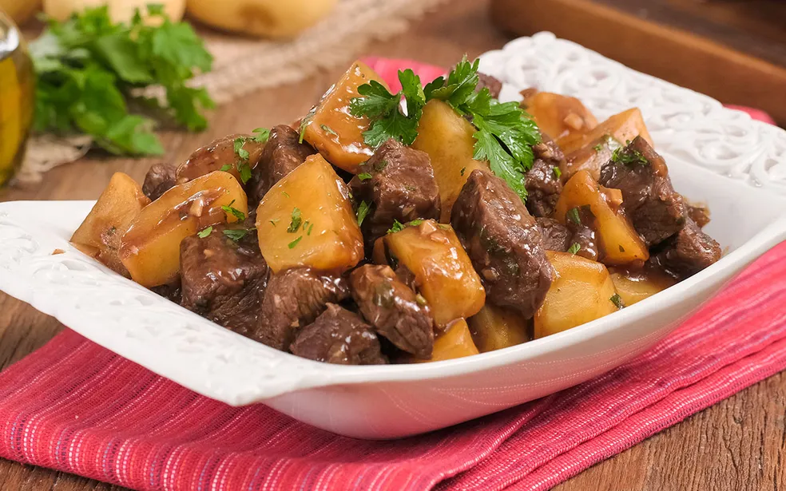

Carne de panela com batata

Ingredientes
- 1 quilo de de miolo de acém em cubos
- 2 colheres de sopa de óleo
- 1 cebola picada
- 4 dentes de alho picados
- Sal a gosto
- Pimenta-do-reino a gosto
- Meia xícara de chá de vinho tinto seco
- 1 quilo de batata descascada em cubos
- Água suficiente para cozinhar
- Cheiro verde picada a gosto
- 2 sache de Sazon para carne
Modo de preparo
- Na panela de pressão, coloque 2 colheres de sopa de óleo e doure 1 cebola e 2 dentes de alho picados.
- Depois, acrescente 1 quilo de miolo de acém em cubos e refogue.
- Em seguida, adicione sal a gosto, pimenta-do-reino a gosto, meia xícara de chá de vinho tinto seco e água suficiente para cobrir a carne. Feche a panela de pressão e deixe cozinhar por 20 minutos.
- Espere a pressão sair, abra a panela e acrescente 1 quilo de batata em cubos. Cubra com água, misture e cozinhe até secar.
- Finalize com salsa picada a gosto.
Para mais receitas, acesse aqui.